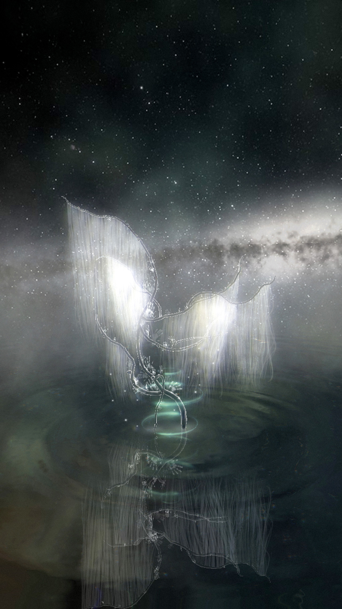

Augmented Reality Effects
AR. Beauty. Fashion. Product. Space (2020–2021)
A selection of personal AR effects developed using Meta Spark (RIP) and Lens Studio.
AR. Beauty. Fashion. Product. Space (2020–2021)
A selection of personal AR effects developed using Meta Spark (RIP) and Lens Studio.

CSOC—VII
A cosmic site of contemplation, briefly transporting the viewer to an imaginary location surrounded by deep space audio. In designing this AR portal effect, we looked to the simplicity of ikebana and considered the fragile memories left behind by visitors. Developed together with Isabel Palumbo.
A cosmic site of contemplation, briefly transporting the viewer to an imaginary location surrounded by deep space audio. In designing this AR portal effect, we looked to the simplicity of ikebana and considered the fragile memories left behind by visitors. Developed together with Isabel Palumbo.

MÉLA◕◡◕NGE
Inspired by editorial collages, this effect blends motion-reactive makeup with a surreal screen treatment. Developed with Isabel Palumbo.
Inspired by editorial collages, this effect blends motion-reactive makeup with a surreal screen treatment. Developed with Isabel Palumbo.

Mode Zero
A Snapchat Lens offering you the possibility to virtually embellish a headpiece through custom UI.
A Snapchat Lens offering you the possibility to virtually embellish a headpiece through custom UI.

☉ CRATER’S EYE ☽
An AR replica of James Turrell’s Crater’s Eye—A room to observe light, time and space within his site at Roden Crater, Arizona.
An AR replica of James Turrell’s Crater’s Eye—A room to observe light, time and space within his site at Roden Crater, Arizona.


Phantom Trilogy
A trio of stylistic references: Japanese horror, Giallo and the ghost of our digital presence.
A trio of stylistic references: Japanese horror, Giallo and the ghost of our digital presence.
Glow Touch
Draw a glowing silhouette with your finger in AR space.
Draw a glowing silhouette with your finger in AR space.
Glass Ripples
Create ripples on your face.
Create ripples on your face.